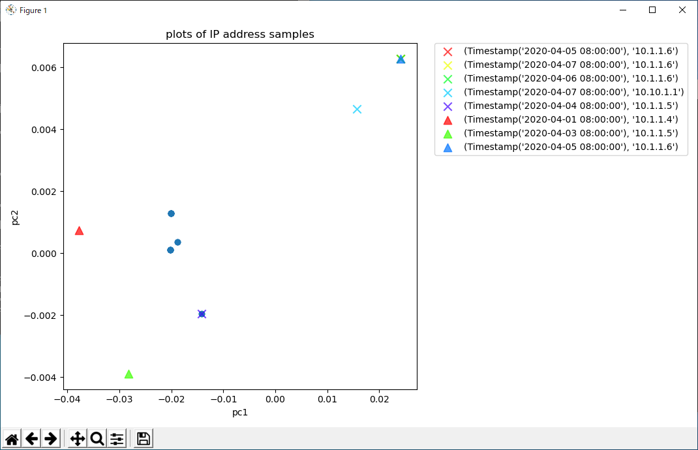
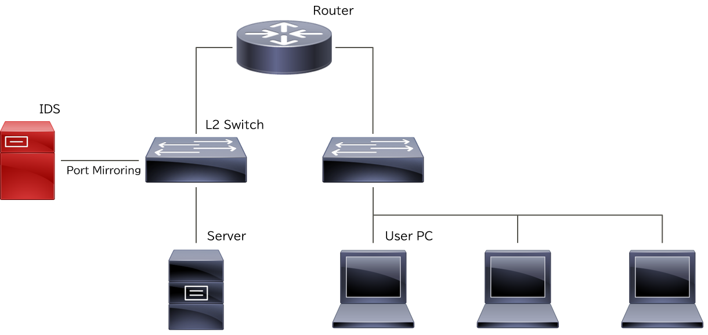
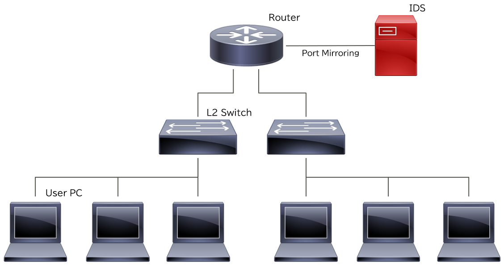

基本的な使い方¶
psykodaを使って自分で用意したIDSログに対してアノマリ検知を実施する場合は、まず事前準備を行う必要があります。 2回目以降の実行またはサンプルログを使って実行する場合は、「実行」セクションから開始してください。
事前準備¶
IDSログの準備¶
学習および検知の対象となるIDSログを準備します。
[IDSログ] IDSログは、次の形式をもつCSVファイルです。カラム名と入力例を示します。
| date_year | date_month | date_mday | date_hour | date_minute | date_second | src_ip | src_port | dest_ip | dest_port | sid | host | PRIORITY | event_name |
|---|---|---|---|---|---|---|---|---|---|---|---|---|---|
| 2020 | march | 29 | 14 | 59 | 34 | 10.1.1.1 | 45723 | 10.1.1.10 | 445 | 200000 | test1 | 3 | testA |
| 2020 | march | 29 | 15 | 13 | 05 | 10.1.1.2 | 57623 | 10.1.1.11 | 80 | 400000 | test2 | 3 | testB |
それぞれのカラムの意味は次の通りです。
| カラム名 | 意味 |
|---|---|
| date_year | ログが記録された年 |
| date_month | ログが記録された月名（英語小文字） |
| date_mday | ログが記録された日 |
| date_hour | ログが記録された時 |
| date_minute | ログが記録された分 |
| date_second | ログが記録された秒 |
| src_ip | 送信元IPアドレス |
| src_port | 送信元ポート番号 |
| dest_ip | 宛先IPアドレス |
| dest_port | 宛先ポート番号 |
| sid | IDSのシグネチャID |
| host | ホスト名 (空欄可) |
| PRIORITY | 優先度 (空欄可) |
| event_name | イベント名 (空欄可) |
IDSログは日付ごとにlog_YYYY-MM-DD.csv(例：log_2020_03_29.csv)というファイル名で保存してください。
また、各IDSログは同一のディレクトリに保存してください。
example/IDS_logディレクトリでIDSログの実例を見ることができます。
除外リストの準備¶
学習や検知から除外する項目のリストを用意します。 このリストを用意することで、特定のIPアドレスやシグネチャIDを学習や検知の対象から外すことができます。 各除外リストは同一のディレクトリに保存してください。
除外リストを使用しない場合は、空のディレクトリを用意してください。
[送信元IPアドレスの除外リスト] 除外リスト（送信元IPアドレス）は次の形式を持つCSVファイルです。カラム名と入力例を示します。
| target | comment |
|---|---|
| 10.11.11.11 | hoge |
| 10.254.0.0/16 | CIDR format is available |
それぞれのカラムの意味は次の通りです。
| カラム名 | 意味 |
|---|---|
| target | 除外する送信元IPアドレス（CIDR形式） |
| comment | コメント (空欄可) |
ファイル名はexclude_list_src_ip.csvとして保存してください。
[宛先IPアドレスの除外リスト] 除外リスト（宛先IPアドレス）は次の形式を持つCSVファイルです。カラム名と入力例を示します。
| target | comment |
|---|---|
| 172.0.0.0/8 | CIDR format is available |
| 10.11.11.11 |
それぞれのカラムの意味は次の通りです。 |カラム名|意味| |:–|:–| |target|除外する宛先IPアドレス（CIDR形式）| |comment|コメント (空欄可)|
ファイル名はexclude_list_dest_ip.csvとして保存してください。
[シグネチャIDの除外リスト] 除外リスト（シグネチャID）は次の形式を持つCSVファイルです。カラム名と入力例を示します。
| target | comment |
|---|---|
| 20 | hoge |
| 4000 |
それぞれのカラムの意味は次の通りです。
| カラム名 | 意味 |
|---|---|
| target | 除外するシグネチャID |
| comment | コメント (空欄可) |
ファイル名はexclude_list_sid.csvとして保存してください。
example/exclude_listディレクトリで除外リストの実例を見ることができます。
サブネット定義ファイルの準備¶
CIDR形式でサブネットのネットワークアドレスとその所在ラベルを定義します。
[サブネット定義ファイル] サブネット定義ファイルは次の形式を持つCSVファイルです。
| subnet | location |
|---|---|
| 10.1.0.0/16 | Japan |
| 10.10.0.0/16 | Europe |
それぞれのカラムの意味は次の通りです。
| カラム名 | 意味 |
|---|---|
| subnet | ネットワークアドレス |
| location | 所在ラベル |
ネットワークアドレスによって所在を分ける必要がない場合は、サブネット定義ファイルを次のように作成してください。
| subnet | location |
|---|---|
| 0.0.0.0/0 | ALL |
カラム名のみ定義して値を定義しないcsvファイルを作成した場合は、クラスAからCのプライベートIPアドレスが所属するunknown_privateと、それ以外のIPアドレスが所属するunknown_globalが定義された扱いになります。
サブネット定義ファイルは任意のファイル名で保存してください。
example/ip_to_location.csvでサブネット定義ファイルの実例を見ることができます。
設定ファイルの準備¶
学習および検知の設定を記載したファイルを準備します。
設定ファイルはJSON形式で記述します。
設定ファイルの実例はexample/config.jsonで見ることができます。
事前準備で作成したファイルの所在を下記キーに対応する値として記載してください。
| キー名 | 値の意味 |
|---|---|
| io.input.dir | IDSログを格納したディレクトリのパス |
| io.output.dir | 検知結果レポートを格納するディレクトリのパス |
| io.previous.load.known_normal.list | 過検知リストのファイルパス（後述） |
| preprocess.exclude_lists | 除外リストを格納したディレクトリのパス |
| feature_extraction.address_to_location | サブネット定義ファイルのファイルパス |
| detection_units.services | サービス名と対応するポート番号を指定（下記参照） |
| detection_units.subnets | アノマリ検知を実施する対象のネットワークとサービスを指定（下記参照） |
設定ファイル内に記述するファイルパスは絶対パスを使用することをおすすめします。
(psykodaコマンドを呼び出すときの) カレントディレクトリに対する相対パスも使用することができますが、この仕様は設定ファイルからの相対パスへ変更される可能性があります。
設定ファイルのパスを与えずに起動するとカレントディレクトリにconfig.jsonがあると仮定して読み込むので、このふたつは同じことになります。
detection_units.servicesについて
この設定項目ではサービス名にポート番号のリストを紐づけることができます。
ここで定義したサービス名は、detection_units.subnetsで使用します。
detection_units.servicesの書式は次の通りです。
"services": {
SERVICE_NAME: {
INCLUDE_OR_EXCLUDE: [PORT_NUMBERS_LIST]
}
}
各項目の意味は次の通りです。
| 項目名 | 意味 |
|---|---|
| SERVICE_NAME | サービス名 |
| INCLUDE_OR_EXCLUDE | "include"(リストのポート番号を含む通信を対象とする)または"exclude"(リストのポート番号を含まない通信を対象とする) |
| PORT_NUMBERS_LIST | 宛先ポート番号のリスト (カンマ区切り) |
入力例1: サービス名「http_and_https」に80番および443番ポートを関連付けたい場合は次のようになります。
"services": {
"http_and_https": {
"include": [80, 443]
}
}
入力例2: サービス名「exclude_http」に80番ポート以外の全てのポートを関連付けたい場合は次のようになります。
"services": {
"exclude_http": {
"exclude": [80]
}
}
detection_units.subnetsについて
アノマリ検知を実施する対象のネットワークとサービスを指定します。
detection_units.subnetsの書式は次の通りです。
"subnets": {
SUBNET_NAME: {
"cidrs": [NETWORK_ADDR_LIST],
"services": [SERVICE_NAME_LIST]
}
}
各項目の意味は次の通りです。
| 項目名 | 意味 |
|---|---|
| SUBNET_NAME | 検知対象ネットワーク名 |
| NETWORK_ADDR_LIST | 検知対象ネットワークのネットワークアドレス (CIDR形式) |
| SERVICE_NAME_LIST | detection_units.servicesで定義した検知対象サービス名のリスト (カンマ区切り) |
NETWORK_ADDR_LISTには下記の定義済み文字列を設定することもできます。"private-A": クラスAのプライベートIPアドレス（10.0.0.0/8）"private-B": クラスBのプライベートIPアドレス（172.16.0.0/12）"private-C": クラスCのプライベートIPアドレス（192.168.0.0/16）
入力例1: 宛先が192.168.1.0/24かつ前述のexclude_httpサービスで定義されたポートへの通信をアノマリ検知対象とする場合は次のようになります。
"subnets": {
"ALL": {
"cidrs": [
"192.168.1.0/24"
],
"services": [
"exclude_http"
]
}
}
入力例2: 宛先がプライベートIPアドレスかつ前述のhttp_and_httpsサービスで定義されたポートへの通信をアノマリ検知対象とする場合は次のようになります。
"subnets": {
"ALL": {
"cidrs": [
"private-A",
"private-B",
"private-C"
],
"services": [
"http_and_https"
]
}
}
設定ファイルは任意のディレクトリにconfig.jsonとして保存してください。
他のファイル名を使用することもできます。
example/config.jsonで設定ファイルの実例を見ることができます。
ディレクトリ構成例¶
事前準備にて用意したファイルやディレクトリの構成例を次に示します。
/
├─ 設定ファイル
├─ 過検知リストファイル
├─ サブネット定義ファイル
├─ IDSログ格納ディレクトリ
│ └─ IDSログファイル群（log_YYYY-MM-DD.csv）
├─ 除外リスト格納ディレクトリ
│ ├─ exclude_list_src_ip.csv
│ ├─ exclude_list_dest_ip.csv
│ └─ exclude_list_sid.csv
└─ 検知結果レポート格納ディレクトリ
IDSログ格納ディレクトリにはIDSログファイルだけを、除外リスト格納ディレクトリには除外リストだけを配置し、検知結果レポートにはユーザ側でファイルを置かないことを強く推奨します。
実行¶
次のコマンドでpsykodaを使ったアノマリ検知を実施することができます。
poetry run kids [--config CONFIG] --date_from DATE_FROM --date_to DATE_TO
CONFIG: 設定ファイルのファイルパス (省略時: カレントディレクトリ/
config.json)DATE_FROM: 検知開始日(YYYY-MM-DD形式)
DATE_FROM: 検知終了日(YYYY-MM-DD形式)
例えば、path/to/config.jsonにある設定ファイルを使って、2020年4月4日から2020年4月7日までのIDSログを対象にアノマリ検知を実施する場合は次のようになります。
poetry run kids --config path/to/config.json --date_from 2020-04-04 --date_to 2020-04-07
結果を読む¶
検知結果は、グラフや簡易結果レポート、詳細結果レポートとして提示されます。
[グラフ] psykodaでの検知が終わると、グラフが次のように画面表示されます。 
各記号の意味は次の通りです。
●印: 正常な挙動を示すIPアドレス
×印: 異常な挙動を示すIPアドレス（アノマリIPアドレス）
▲印: 過検知IPアドレス
×印に対応する凡例を見ることで、異常な挙動を示すIPアドレスとその日付を知ることができます。
[簡易結果レポート] 簡易結果レポートは次のように標準エラー出力に出力されます。 簡易結果レポートを読むことで、検知されたアノマリIPアドレスを知ることができます。
(*snip*)
[TARGET INFO]
Number of loaded log entries: 228
Number of unique source IP addresses: 7
(*snip*)
[RESULT]
Detection summary file: ./example/result/2020-04-04__2020-04-07\report.csv
Number of unique anomaly IP addresses: 2
- 10.10.1.1 (max anomaly score: 149.71405)
- 10.1.1.6 (max anomaly score: 77.38443)
[詳細結果レポート]
詳細結果レポートは設定ファイルのio.output.dirで設定したディレクトリに出力されます。
出力先サブディレクトリとファイル名 report.csv は簡易結果レポートのDetection summary fileにも記載されています。
詳細結果レポートは次の形式を持つCSVファイルです。カラム名と入力例を示します。
| datetime_rounded | src_ip | subnet | service | anomaly_score | shap_top_1 | top_1_shap_value | shap_top_2 | top_2_shap_value | shap_top_3 | top_3_shap_value | shap_top_4 | top_4_shap_value | shap_top_5 | top_5_shap_value |
|---|---|---|---|---|---|---|---|---|---|---|---|---|---|---|
| 2020-04-03 08:00:00 | 10.1.1.5 | ALL | ALL | 216.1618 | Japan__ America__dest_port_445 | 1.6782 | Japan__ America__sid_200000 | 1.2323 | 0 | 0.0 | 0 | 0.0 | 0 | 0.0 |
それぞれのカラムの意味は次の通りです。
| カラム名 | 意味 |
|---|---|
| datetime_rounded | 日付 (YYYY-MM-DD HH:00:00) |
| src_ip | 異常なふるまいを示すIPアドレス |
| subnet | 検知対象のサブネット名 |
| service | 検知対象のサービス名 |
| anomaly_score | アノマリスコア (値が大きいほど異常) |
| shap_top_X | X番目のアノマリ要因 |
| top_X_shap_value | X番目のアノマリ要因のスコア (値が大きいほどアノマリスコア上昇に寄与) |
過検知の抑制¶
psykoda によるアノマリ検知は半教師あり学習であるため、既知の過検知に関する情報を利用して過検知を抑制することができます。 これは psykoda を定期的に実行してアノマリを精査するようなシナリオで役に立ちます。
過検知リストの準備¶
過去に過検知と判断された日時と送信元IPアドレスのリストを用意します。 このリストに記載されている日時/送信元IPアドレスと似通った振る舞いをアノマリとして検知しにくくする効果があります。
過検知リストを使用しない場合は、設定ファイルのio.previous.load.known_normal.listをキーごと削除してください。
[過検知リスト] 過検知リストは次の形式を持つCSVファイルです。カラム名と入力例を示します。
| datetime_rounded | src_ip | comments |
|---|---|---|
| 2020-04-01 08:00:00 | 10.1.1.4 | hoge |
それぞれのカラムの意味は次の通りです。
| カラム名 | 意味 |
|---|---|
| datetime_rounded | 検知された日付 (YYYY-MM-DD HH:00:00形式。分・秒の情報は入れてはならない。) |
| src_ip | 送信元IPアドレス |
| comments | コメント (空欄可) |
過去に検知されたアノマリの情報を評価結果レポートからコピーし、datetime_rounded, src_ip の値としてペーストしてください。
過検知リストは任意のファイル名で保存してください。
example/labeled_src_ip.csvで過検知リストの実例を見ることができます。
ユースケース¶
psykodaは例えば下記のようなケースでIDSアラートログのアノマリ検知を行うことに役立ちます。
ケース1¶
クライアント群が所属するネットワークとサーバが所属するネットワーク間の通信をIDSで監視しているケースです。 IDSの誤検知が多い状況で、クライアントがサーバに対して不審な通信を行っていないかどうかを検知することができます。 
ケース2¶
複数のネットワーク間の通信をIDSで監視しているケースです。 IDSの誤検知が多い状況で、ネットワーク間を不審な通信が流れないないかどうかを検知することができます。 